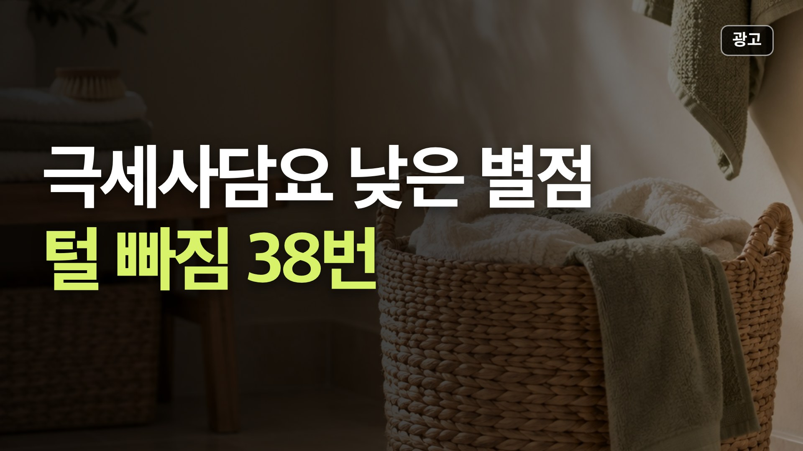
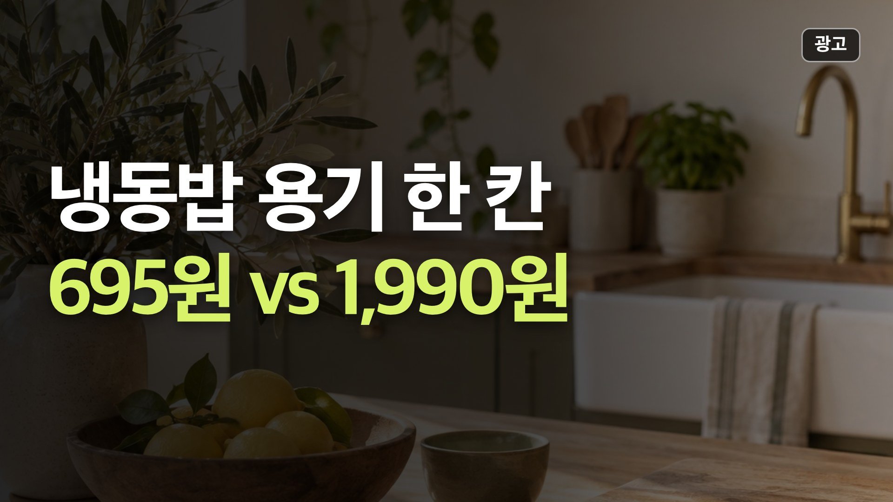
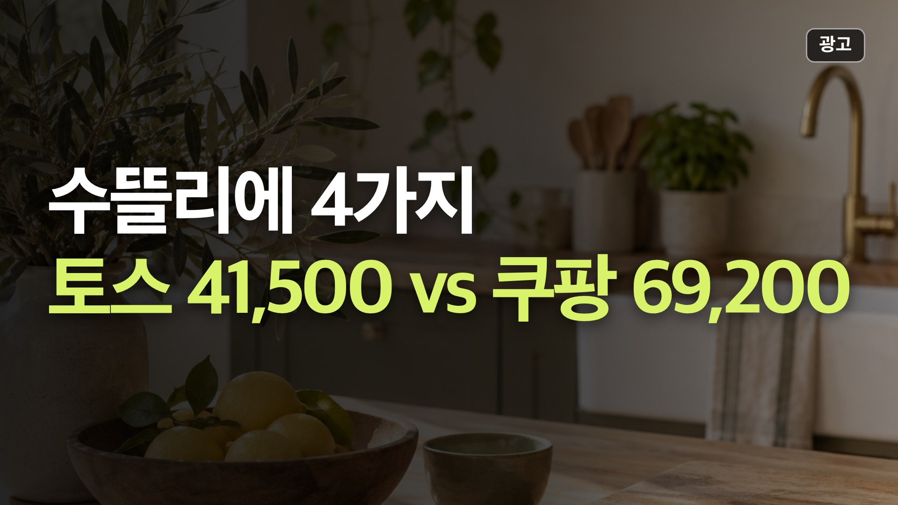
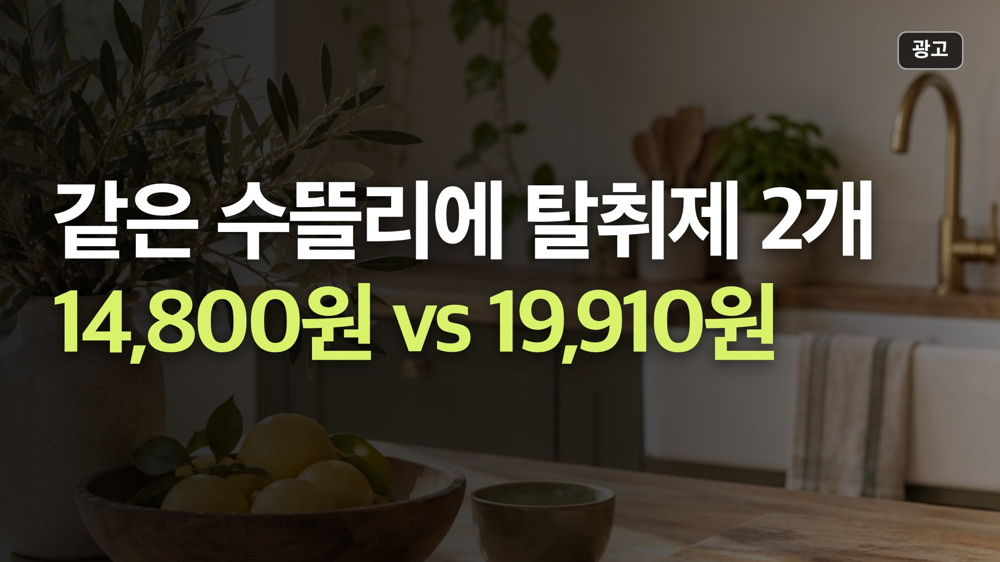

이 페이지는 쿠팡 파트너스 활동의 일환으로, 이에 따른 일정액의 수수료를 제공받습니다.
이 포스팅은 토스쇼핑 쉐어링크 활동의 일환으로, 이에 따른 일정액의 수수료를 제공받습니다.
영상에서 본 상품, 바로 가격 보기
쇼츠·영상에 나온 상품을 최근 영상부터 모았어요. 버튼을 누르면 쿠팡이나 토스 앱으로 바로 이어져요. 가격은 확인 날짜 기준이라 들어가서 한 번 더 확인해 주세요.
📺 최근 영상
뽑아쓰는 키친타올, 10매 100원대에서 갈린 것
10매당 가장 싼 쪽은 보니타굿즈 뽑아쓰는 천연펄프 키친타올 3겹(100매 10개 9,990원, 10매 100원)인데, 별점 1~3점 20개 중 6개가 파란 잉크선이 묻어난다, 6개가 얇다는 내용이었어요.
📅 가격은 10월 26일 확인값이에요.
비교 전체 보기전기방석 낮은 별점, 한 달 만에 고장이 17번
가장 싸고 상품평이 많은 한일의료기 탄소열선 황토 전기방석(45×45cm 14,900원, 상품평 7,224)은 별점 1~3점 20개 중 고장·불량 5개, 얼룩·오염 5개, 상자 없이 송장만 붙어 왔다 5개였어요. 받자마자 겉면과 조절기부터 확인하세요.
📅 가격은 10월 27일 확인값이에요.
비교 전체 보기황토찜질팩 낮은 별점, 냄새가 37번 나왔어요
냄새에 예민하면 한일의료기 인견사 황토 냉온 찜질팩(7,550원)과 어깨 찜질팩(11,800원)은 조심하세요. 별점 1~3점 20개 중 각각 13개, 14개가 석유·약품 냄새가 안 빠진다는 내용이었어요.
📅 가격은 10월 26일 확인값이에요.
비교 전체 보기
극세사담요 낮은 별점, 털 빠짐이 38번
극세사 담요 세 가지는 별점 1~3점 20개 중 털 빠짐이 일상Up 15개, 더자리 마이블랭킷 12개, 코멧 홈 양면 11개였어요. 세탁하고 건조기를 돌려도 계속 빠진다는 말이 많아서, 검은 옷을 자주 입으면 각오하세요.
📅 가격은 10월 27일 확인값이에요.
비교 전체 보기욕실온풍기, 램프형 낮은 별점 7개는 '녹았다'
오래 켜 둘 집이면 델루체 욕실히터 DWH-BR3000(49,900원) 같은 램프형은 조심하세요. 별점 1~3점 20개 중 7개가 본체나 걸이가 열에 녹았다는 내용이었고, 그중 1개는 떨어진 히터에 화상을 입었다는 내용이었어요.
📅 가격은 10월 27일 확인값이에요.
비교 전체 보기알러지케어 이불, 왜 바스락거린다는 말이 많을까
퀸 사이즈를 가장 싸게 사려면 마이라이크 알러지케어 항균 차렵이불(Q 180×210cm 29,800원)인데, 내용 있는 별점 1~3점 10개 중 7개가 실밥·솜털·보풀이 나온다는 내용이었어요. 먼지에 예민하면 피하세요.
📅 가격은 10월 26일 확인값이에요.
비교 전체 보기방한커튼, 낮은 별점 80개에 가장 많았던 말
창문 외풍이면 코멧 홈 단열 아일렛 암막 커튼(145×230cm 9,990원)이 1㎡당 약 3,000원으로 가장 싸요. 다만 별점 1~3점 20개 중 6개가 얼룩·오염, 6개가 크기가 생각과 달랐다(짧다·좁다 등)는 내용이라 받자마자 펼쳐서 재 보세요.
📅 가격은 10월 26일 확인값이에요.
비교 전체 보기
냉동밥 보관용기, 맥스앤맥스 한 칸 695원
냉동밥을 많이 얼리는 집이면 맥스앤맥스 이지밀 소분 용기(350ml 12개+700ml 8개)가 토스쇼핑 13,900원으로 한 칸 695원이라 가장 쌌고, 쿠팡의 같은 20개 구성 23,590원보다 9,690원 쌌어요.
📅 가격은 10월 25일 확인값이에요.
비교 전체 보기
수뜰리에 어디서 사요? 4가지 합치면 27,700원 차이
수뜰리에 섬유유연제(소프트 비누향·코튼캔디), 세탁세제(쉰내제거 딥클린), 고체 탈취제(데이지 2개)는 같은 구성이 쿠팡보다 토스쇼핑에서 5,110원~8,900원 쌌어요. 네 가지를 합치면 토스 41,500원, 쿠팡 69,200원이에요.
📅 가격은 10월 24일 확인값이에요.
비교 전체 보기
수뜰리에 탈취제, 토스가 쿠팡보다 5,110원 쌌어요
수뜰리에 퍼퓸 고체 탈취제 데이지 310g 2개는 같은 구성이 토스쇼핑 14,800원, 쿠팡 19,910원이라 수뜰리에를 살 거면 토스가 5,110원 쌌어요(100g당 2,387원 vs 3,211원).
📅 가격은 10월 23일 확인값이에요.
비교 전체 보기💸 오늘 토스 특가 하루 한 번 갱신
1매 약 5원
베라 무해력 4ZERO 뽑아쓰는 미용티슈 250매, 6팩
20,900원 7,990원 · ★4.6 · 10/27 11:05 확인
100ml 1,380원
스페시핏 뿌리는 곰팡이 제거제 500ml, 2개
35,600원 13,800원 · ★4.6 · 10/27 11:05 확인